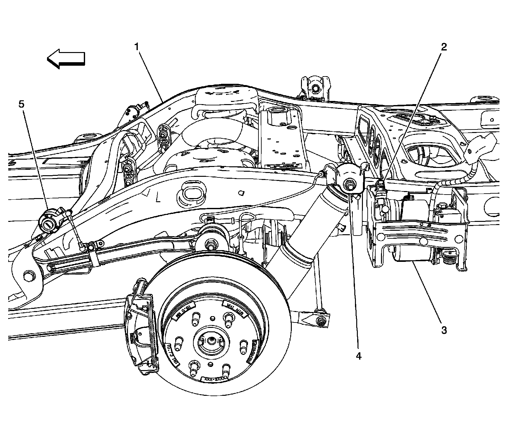
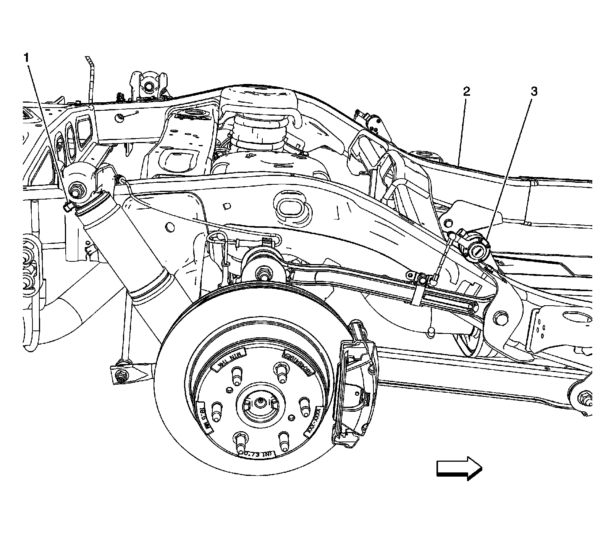

Electronic Suspension Control
Electronic Suspension Control Component Views
LR Suspension Components:

1 - Chassis
2 - Automatic Level Control Pressure Sensor (Z55)
3 - Automatic Level Control (ALC) Compressor Assembly (Z55)
4 - Suspension Damper Solenoid - LR (Z55)
5 - Suspension Position Sensor - LR (Z55)
RR Suspension Components:

1 - Suspension Damper Solenoid - RR (Z55)
2 - Chassis
3 - Suspension Position Sensor - RR (Z55)